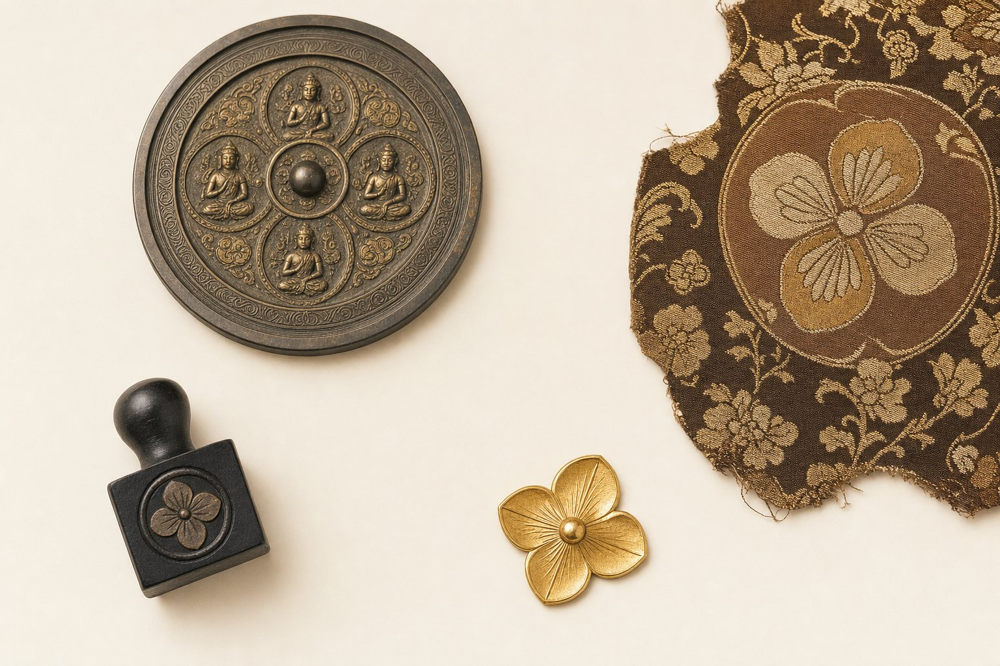
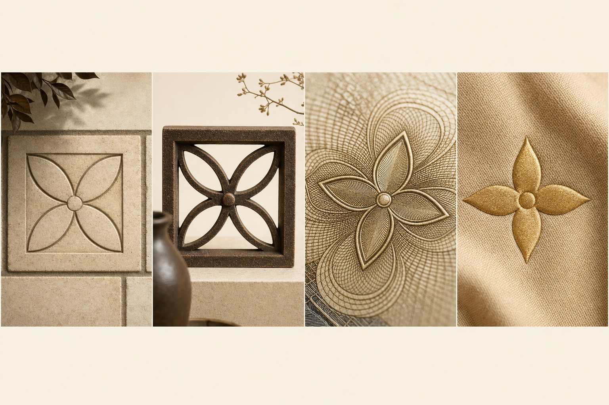
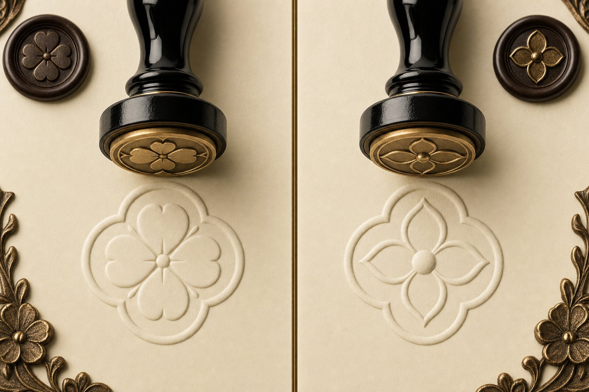
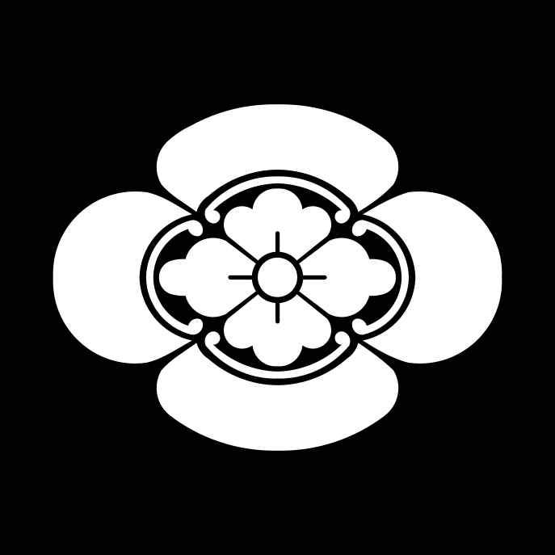
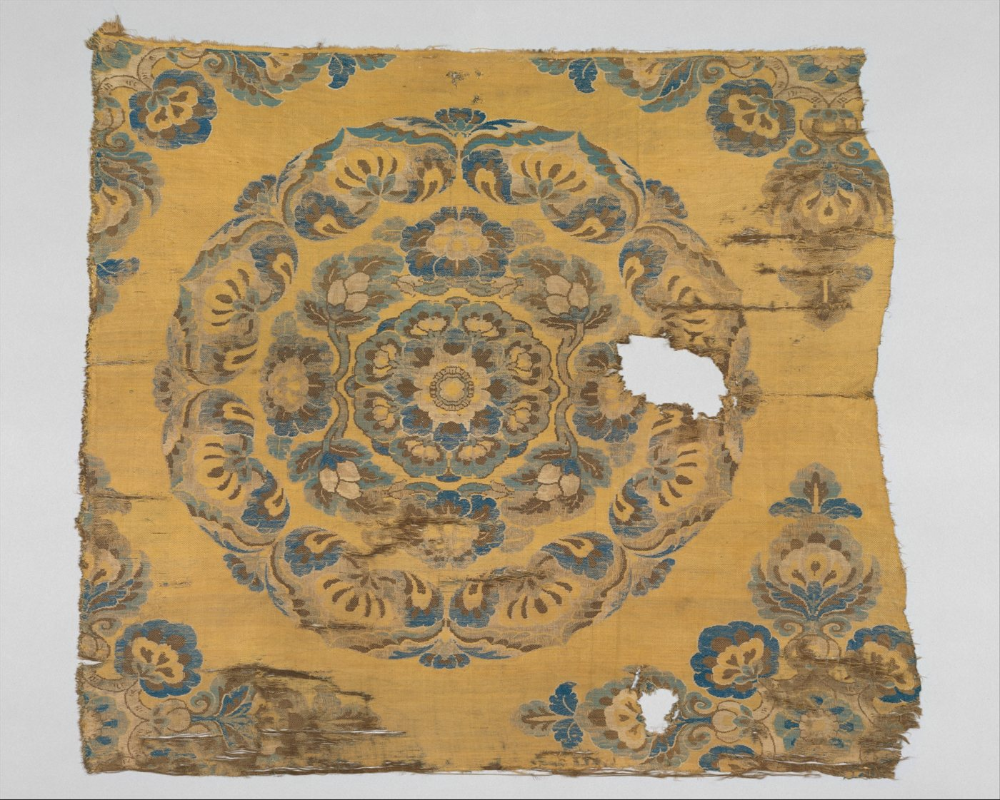
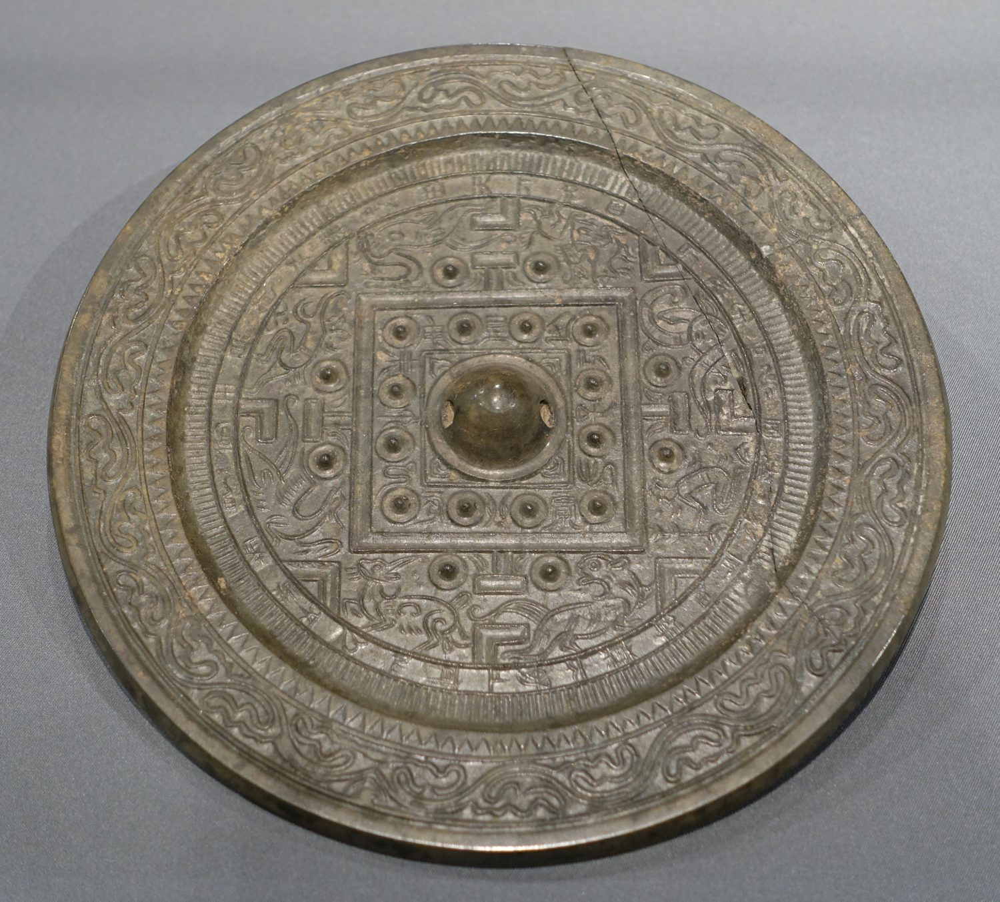

这次上热搜的，是一朵四瓣花，和一张一千零三十万的判决书。但很少有人真的把这朵花的来路，从头到尾摸一遍。今天我们就慢慢摸一次。

你大概没注意过，这朵花其实天天在你眼前晃。
公园的地砖，一格一格拼过去，中间常常是一朵四瓣花。老小区的围墙，那种镂空花砖，四瓣花也是最常见的样式之一。再往细里看，我们的人民币纸币上，那圈精细的团花，骨子里也是同一套传统花卉纹样，柿蒂纹、团花纹、莲花纹，都在里面。
换句话说，四瓣花、四叶花这种东西，对中国人来说，属于那种熟到视而不见的背景。你说它像谁，第一反应多半是：它谁也不像，它就是个到处都有的老花样。

把镜头切到巴黎。
1896 年，路易威登的儿子乔治·威登，画出了那套后来红遍全球的老花。四个字母 LV，配上四瓣花、星形花、菱形花，铺成一整片。他做这个东西的目的很实在，一是防伪，当时仿冒太猖獗，得有个别人抄不像的记号；二是纪念四年前去世的父亲。
官方给出的三个灵感来源是：新艺术运动、日本主义，还有哥特纹章艺术。
注意中间这个词，日本主义。十九世纪后半叶，法国刮起一股狂热的日本风，叫 Japonisme。日本一开港，浮世绘、漆器、和服、织物、家纹，成船地运进欧洲，把整个巴黎艺术圈迷得神魂颠倒。
有一个很具体的时间点。1867 年，巴黎办世界博览会，第一次大规模展出日本艺术。有记载说，就是这段时间，路易威登的人，盯上了日本德川家、岛津家的家纹。
接下来才是这篇文章真正想讲的。LV 借鉴了东方，那这个东方，它的东方，又是从哪来的。
日本家纹里，有一种叫木瓜纹，四片花瓣一样的结构，是全日本最常见的家纹之一，织田信长家用的就是它。你把它跟 LV 那朵花摆在一起看。


像不像，你自己有数。而更关键的是，这个相似不是我们硬凑的。跟 LV 合作了十几年的日本艺术家村上隆，自己公开说过：Damier 格纹的灵感来自日本的市松格，那朵花，和日本家纹很像。LV 后来还出过一个系列，名字直接叫 Kamonogram，家纹（Kamon）加老花（Monogram），拼在一起。
那日本这套花纹，又是自己长出来的吗。不是。这一段，我们甚至不用自己开口，日本人自己的博物馆写得清清楚楚。
奈良国立博物馆的正仓院展，在解释宝相花这种纹样时说：它中国隋到初唐产生，唐代流行，日本从奈良时期才开始流行起来。换句话说，连日本人自己的博物馆，都把这朵花的老家，写在了中国。
宝相花是什么。宝相二字出自佛教，本指佛像庄严宝贵之相；而这朵花的骨子里是莲花——梵语 padma（पद्म，旧译"钵特摩"），佛教眼中圣洁之花。它以牡丹、莲花、芙蓉为底子，再把云纹、忍冬、桃瓣一层层包进去，人工拼出来的一朵现实里根本不存在的花。一朵幻想之花。唐朝的壁画、丝绸、瓷器上，全是它。

再往上一层，到汉朝。
四瓣花在中国，战国就有了，汉代满地都是，铜镜、玉器、漆器、瓦当上到处是它，后人叫它柿蒂纹。
这里有个冷门到不能再冷门的知识。北大的李零先生，在中国国家博物馆的馆刊上，专门给这朵花正过名。他找到两面战国铜镜，上面刻着八个字：方华蔓长，名此曰昌。
按这句铭文，这朵花本来的名字，不叫柿蒂纹，叫方华，也就是方花，标志四方的花。它同时跟芳华谐音，一朵芬芳的花。那个蔓字，象征子孙绵延不绝。
它更不是随便画着玩的。李零指出，战国秦汉流行用四瓣花来标志四方。四川出土过一件鎏金铜牌，四片花瓣上，分别是青龙、白虎、朱雀、玄武。
四片花瓣，四个方位，四大神兽。
两千多年前，中国人拿这朵花，标的是整个天地宇宙。

把这条路连起来看，有一点要说清楚，免得会错意：
这条路同时在三个地方发生，又在三条线上推进：纹样怎么演变，怎么被做成生意，最后怎么变成一纸法律权利。下面这张分层时间轴，你可以按维度筛，也可以点开每一个节点看细节。
讲到这，有人可能已经憋不住了：既然这朵花的老家在中国，法律凭什么判它是 LV 的。
先说清楚，这场官司，LV 赢得并不冤。
商标法从来不保护一朵花本身。它保护的，是一个图形用了很久很久之后，跟一个牌子死死绑在一起的那种识别关系。耐克不用证明那个勾是它发明的。LV 也不用证明四瓣花是它原创的。它只需要证明一件事：我这一朵特定的花，用了一百多年，你一看就知道是我。这在法律上叫第二含义。加上它是驰名商标，按商标法第十三条能跨类保护，哪怕你卖的是奶茶不是包，也管得着。
而茉莉奶白真正输的地方，也不是它用了一朵老祖宗的花。是它早就多次去申请这个花的商标，全被驳回了。它清清楚楚知道有在先的权利冲突，还是在全国上千家门店铺开用。这在法律上，叫明知故犯。
所以法律这边，没判错。
但你是不是还是觉得哪里不对。对，问题就在这儿。
这就是那句中国的怎么变 LV 的了，背后真正的憋屈。也是官和民之间，那道永远拧巴的缝。法律讲的是证据、规则、注册在先；民间讲的是来路、情理、老祖宗。两边都不是空话，但根本不在一个频道上。
那中国有没有自己的根。有。我们对纹样的理解，是方华标四方、宝相含万象、缠枝寓绵长，是一套讲究来路和意涵的活的传统。真正该补的，是让这套文化溯源的逻辑，有机会走进现代商标审查的视野，而不是永远停在像不像这一层。这条路很长，但方向是对的。
绕了两千年，我们把镜头拉回来。
其实这里还藏着一个特别好笑的点，很多人没细想：茉莉花，根本不是四瓣花。
茉莉是单瓣五六片、重瓣一大簇的花，圆润、层叠，怎么都跟四瓣扯不上关系。一个叫茉莉的牌子，不去用自己名字里那朵真花，偏偏挑了一朵四瓣花。而这朵四瓣花的真身，是柿蒂纹、宝相花、家纹、LV 老花这一整条线，跟茉莉半毛钱关系都没有。
你到底在致敬谁。
说得直白点，这套把法式高奢感往奶茶杯子上一贴的打法，怎么看都像是营销公司把那套"国风高奢"的现成模板，换了个壳又做了一遍，结果一头撞进了 LV 的商标墙。米白配藏蓝，粗印花铺底，中间来个花标，这些年我们见得还少吗。
与其花大价钱找营销公司，抄来抄去抄进法院，
还真不如老老实实用 AI 做营销。
我说这句不是开玩笑。我自己就在 AI 这个行业里。我太清楚今天的工具，已经能帮一个品牌，从自己的名字、自己的故事、自己的文化根里，长出真正属于它的东西，而不是去别人的视觉资产边上打擦边球。茉莉就该有茉莉的样子。你手里明明攥着两千年的方华、宝相花、缠枝纹，这么大一座宝库，为什么非要去描一朵别人的老花。
方华这朵花，两千年前开在中国人的铜镜上，标着天地四方。今天它成了别人的商标，回来要我们让路。
我们该做的，不是哭喊它被抢走了。是像当年把西域的种子，养成宝相花那样，再来一次。用今天的技术、今天的审美，把老祖宗的东西，长成只属于这个时代、又谁也拿不走的新东西。
这，才是这朵花，真正该有的下一站。